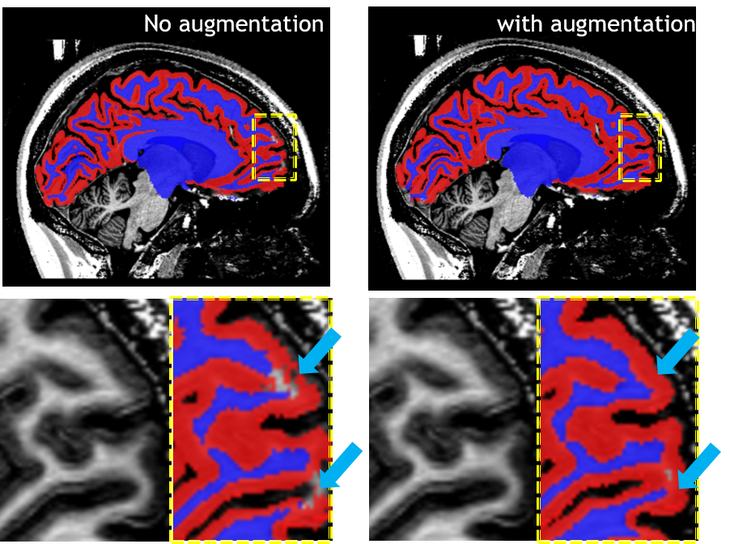
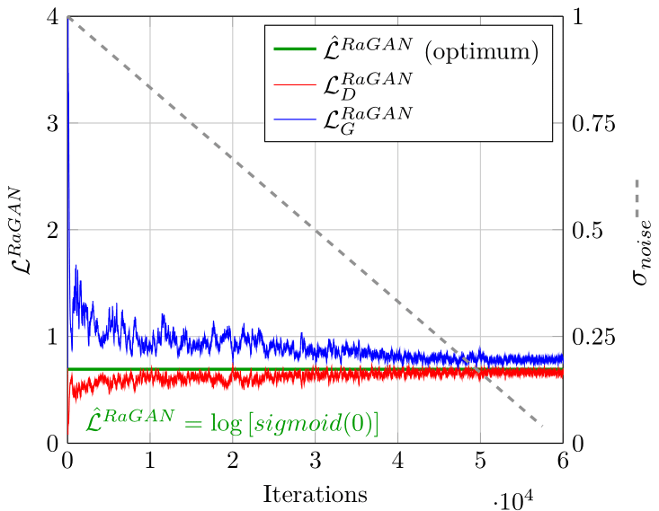

Super resolution using GAN
This project is mainly about deploying GAN for generating high fidelity super-resolution (SR) MRI images
The result of SR could be extend for consequent applications, e.g. data augmentation for segmentation models, and these result were shown in OHBM2022 and MIDL2022; while the development of our SR model with 3 players as well as the denoising features can be found at MICCAI2023 and ICCV2023.
- Improving segmentation accuracy for brain MRI by training on SR augmented dataset
- 3-Player GAN for perceptually SOTA SR task
- Noise cleaning with wavelet-informed discriminator for SR
In my opinion, SR task should be distinguished from other generative tasks (e.g. style transfer, cross-modality generation etc.), because of the nature of the task in pursuit of sharp and realistic image content. Thus, I personally prefer to redeem a SR task as restoring HR image from an LR counterpart with minimum perceptual loss (i.e. consistent quality). As an analogy, the SR process can be seen as fitting learnable upsampling kernels within the scope of the dataset. While many models failed at this point, DDPM treats SR as a way of matching the probability distribution of HR and SR images, which overlooks the local details that are mostly approximated via the intrinsic inductive bias of the convolutional layers.
Augmentation
The segmentation networks were separately trained on purely real MRI T1w images (left) and a mixture of SR images and real images (right), the latter training yields more correct segmentation as are pointed out by the blue arrows.

Convergence of Three-Player GAN
Balancing GAN training is notoriously difficult, as the generator and discriminator are forming a min-max game which causes instability during the training and close to the global optimum. In 3-player GAN, an additional player is introduced to enhance the perceptual quality while further complicating the training dynamics. To address this, annealed Gaussian noise were added to both GAN objections to enforce the overlapped distributions therefore a stable gradient.
With the discrepancy for relativistic GAN loss ($\mathcal{L}^{RaGAN}$) approaching 0, for both the generator (G) and discriminator (D), the model is considered converged and balanced, which is shown to happen in our experiment.

DISGAN
As can be seen in the listed results, where the DISGAN output (left) shows close approximation to the GT (right). While eliminating intrinsic artefacts, like repetitive stripes shown in the green box below.